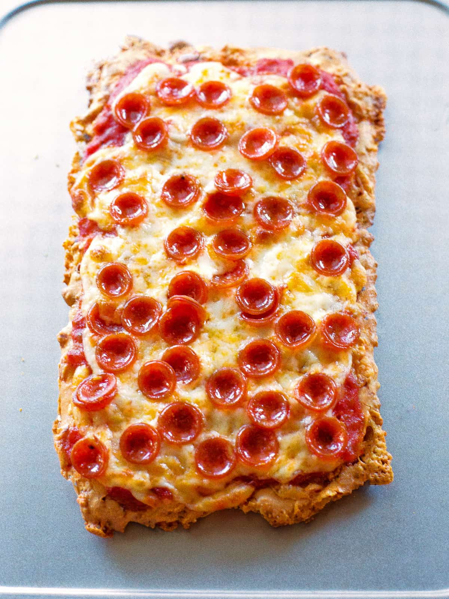

Picca

Description
MK-gold pizza crust recipe for ketomaniacs
Ingredients
- Olives oil 40g
- Honey 5g
- MK Gold 200g
- Dry yeast 5g
- Water 220g
Steps
- Water up yeast until there'll be seen bubbles
- Add rest of ingredients
- Mis it up with blender
- Leave to grow for 5 minutes